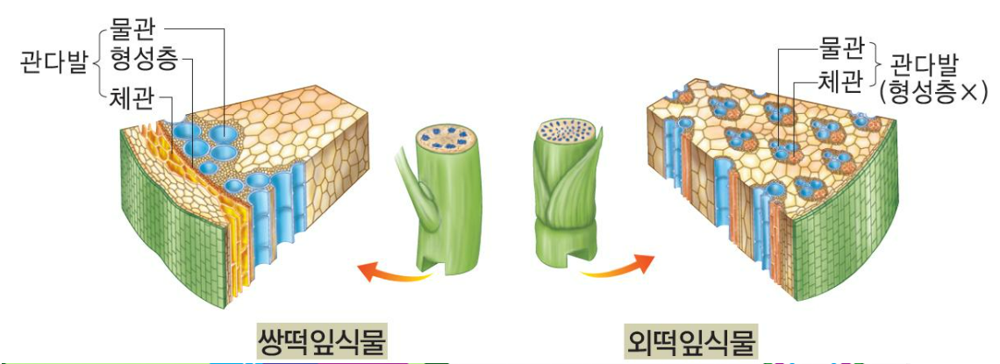
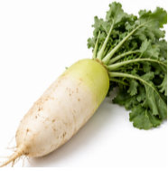
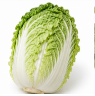
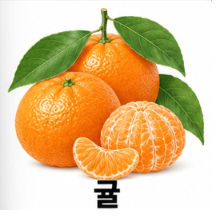
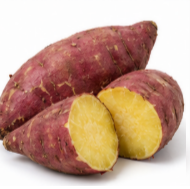
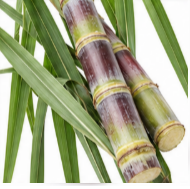
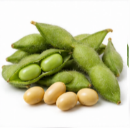
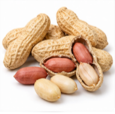
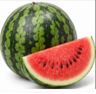

Mission 4: 햇빛 금고
식물의 양분 생성부터 이동, 이용, 그리고 햇빛 금고(저장)까지 알아봅시다.
낮
밤
이용
저장
STEP 1. 양분의 생성
• 물, CO₂, 빛 뱃지를 엽록체 공장으로 1세트(각 1개)씩 모아보세요!
녹말을 2개 만들면 퀴즈가 나타납니다.
• 포도당 5개가 모이면 녹말 1개로 변환됩니다.
• 실제로는 수많은 포도당이 모여 녹말이 됩니다.
📝 광합성 산물 퀴즈
Q. 광합성 결과 최초로 만들어진 양분인 포도당은 바로 물에 녹지 않는 양분인 무엇으로 바뀌어 엽록체에 저장되는가?
STEP 2. 양분의 이동 (밤)

체관을 따라 꽃, 열매, 뿌리 줄기 등으로 이동한다.
<양분과 물을 세포질로 보낸 후 다시 각각 이동 경로로 보내세요>
🌿 엽록체
세포질
🌱 설탕이 체관을 따라 뿌리, 줄기, 꽃, 열매 등으로 이동합니다.
📝 이동 경로 퀴즈
Q1. 엽록체에 임시 저장되었던 녹말이 식물의 각 기관으로 이동할 때 어떤 양분으로 바뀌는가?
Q2. Q1의 양분으로 바뀐 후 줄기의 무엇을 따라 이동하는가?
Q3. 광합성 결과 생긴 산소는 낮에 식물 자체의 호흡에 사용하다 남은 것은 잎의 어느 부분을 통해 식물 밖으로 나가는가?
STEP 3. 양분의 이동과 이용
📝 Q.
낮에 엽록체에 임시 저장된 녹말은 밤이 되면 (으)로 변하여 줄기의 을(를) 따라 뿌리, 줄기, 꽃, 열매 등 식물의 각 기관으로 이동해요.
식물이 합성한 양분은 어떻게 이용될까요?
Q1. 생명 유지
식물이 살아가는 데 필요한 에너지를 내는 과정은?
Q2. 몸의 구성성분
새로운 잎과 줄기를 만들어 몸집을 키우는 과정은?
Q3. 꽃과 열매
자손을 남기기 위해 씨앗(열매)을 맺는 과정은?
Q4. 저장
뿌리, 줄기, 열매, 씨 등에 나중을 위해 모아 두는 것은?
Q5. 동물의 먹이
식물에 저장된 양분은 초식/육식 동물의 무엇이 되나요?
🎉 수확하였습니다!
최종 복습 퀴즈
식물이 광합성 작용으로 합성한 양분은 식물의 자체의
(),
(),
()에 사용되고 남은 것은 다양한 형태로 저장된다.
뿌리, 줄기, 열매, 씨 등에
()된 양분을 동물이 먹어서 동물이 자란다.
과실이 무르익었습니다!
수확하시겠습니까?
STEP 4. 햇빛 금고 대정리
창고에 수확한 식물들이 무질서하게 쌓여있습니다. 금고에 영양소와 저장기관을 기준으로 분류하여 정리하세요. 같은 종은 한 곳에 중복해서 넣을 수 없습니다.
📦 창고
✨ 햇빛 금고가 가득찼습니다!
📖 재미있는 식물 이야기 (땅콩, 감자, 고구마)
아래의 식물은 모두 우리가 먹는 부위를 땅 속에서 수확하지만 양분이 저장된 기관은 서로 달라요.!
땅콩은 꽃이 진 후 땅속으로 파고들어가 땅속에서 열매를 맺어요.
감자는 양분이 줄기에 쌓여 굵어져서 감자가 돼요.
고구마는 양분이 뿌리에 쌓여 굵어져서 고구마가 돼요.
양파는 양분이 잎에 쌓여 굵어져서 된 것이랍니다. 세상에나!!
📝 Q. 양분을 주로 저장하는 기관을 서로 알맞게 짝지으시오.
(왼쪽이나 오른쪽의 식물 사진을 먼저 누르고, 가운데 저장 기관을 누르면 선이 연결됩니다.)








🎉